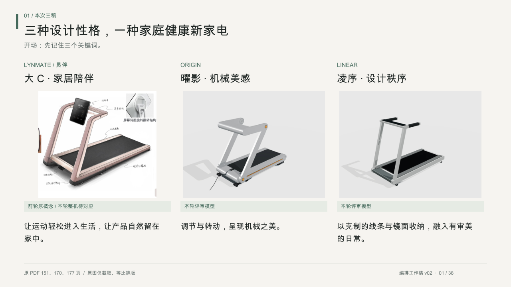

LIJIUJIA / PRESENTATION STRUCTURE / 2026.11.14
先看三稿，再看依据，最后逐稿展开
38页编排工作稿 v02 · 每页对应原191页高清资料。原图仅截图与等比排版；当前缺失素材已标出位置。

查看完整 PDF（需私有仓库权限）打开现有互动评审
结构工作稿已生成并检查；本轮人物使用场景、爬坡氛围及部分对应关系仍需补齐，尚不是客户终稿。
汇报顺序
1–5 三稿亮相与对比 → 6–10 研究、方向与用户 → 11–19 大C（灵伴） → 20–28 曜影 → 29–37 凌序 → 38 三稿并列收束。
每稿采用相同顺序：成果回顾、手绘、模型、日常家居、爬坡训练、收纳、动态演示、两页细节。
60分钟安排
开场5分钟、研究与用户6分钟、大C 8分钟、曜影10分钟、凌序11分钟、收束2分钟；主讲42分钟，讨论15分钟，缓冲3分钟。动态演示包含在各方案时段内。
凌序第37页揭晓“可选把手”，第38页回扣“更能定义自我”。现有四种把手概念以原图局部截图展示；选配方式、接口及心率功能仍待细化。
内容取舍
- 以研究路径和真实产出说明投入，不编造人数、工时或访谈规模。
- 共同目标：更高效、更悦己、更能定义自我的家庭健康新家电。
- 灵伴建议定位“家居陪伴”；已取消的分体闺蜜机仅作历史来源。
- 灵伴与当前坡形的对应、第二款镜面归属，继续保留待确认状态。
- PDF动态页提供静帧及现有互动链接，没有新录制视频，也不恢复已撤回的动作。
逐页来源索引
页码为原高清 PDF 的阅读器页码。完整研究资料保留在私有主档。
新生成 / 待评审。结构与文案建议不等于用户选定或工程核验。